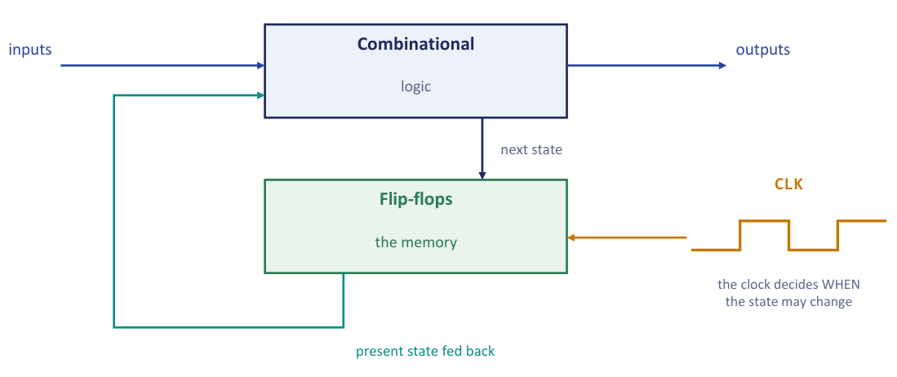
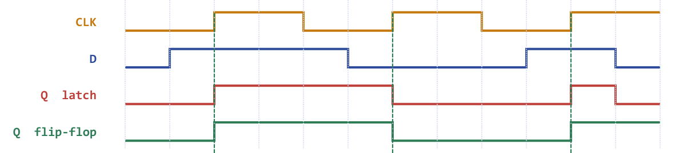
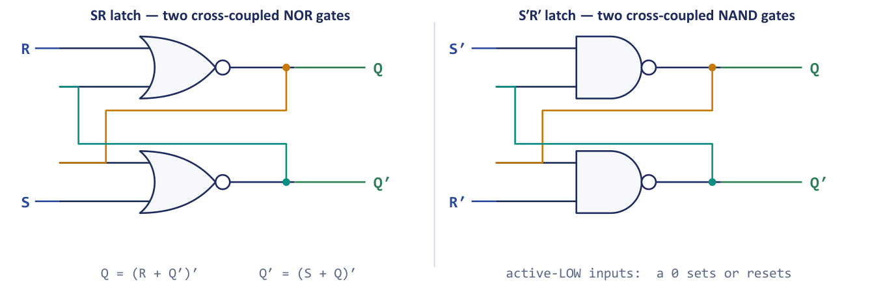
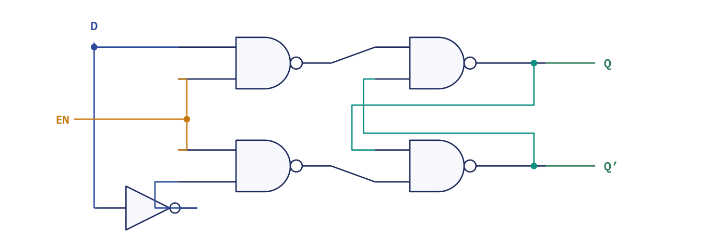
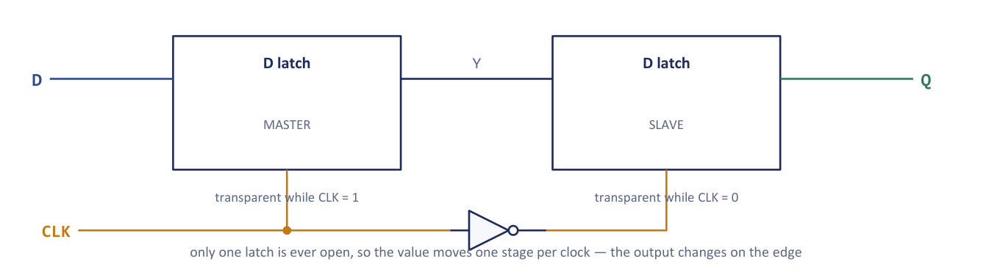
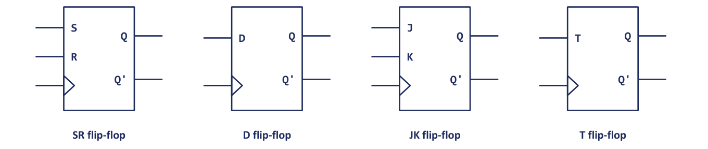
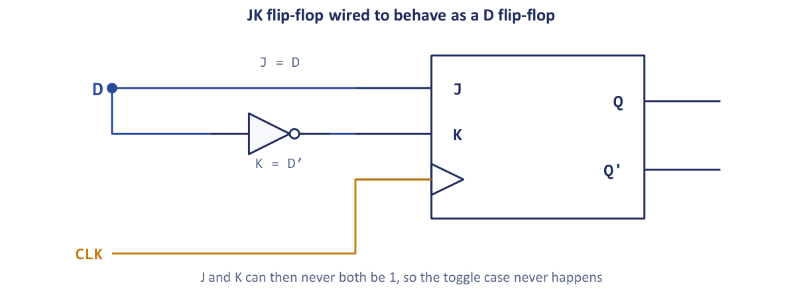
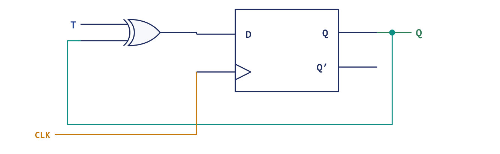
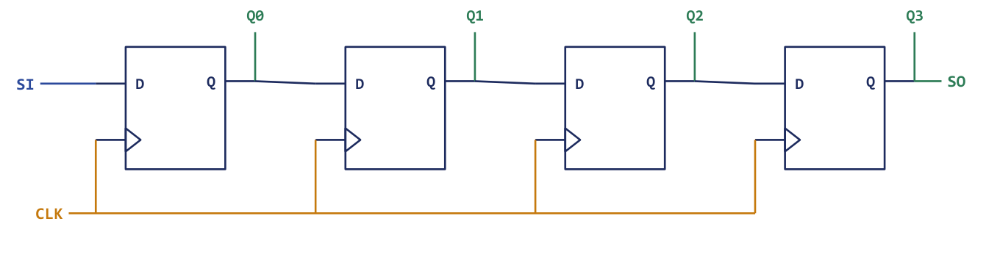

Chapter 3: Sequential Circuits and Flip-Flops¶
Adding memory to logic: latches, flip-flops, characteristic tables and excitation tables
Everything in the previous two chapters was combinational: the output of a circuit depended only on the inputs present at that moment. That is enough to add two numbers or to decide which of eight lines to select, but it is not enough to build a computer. A processor must hold a number long enough to add it to the next one, remember which instruction comes next, and step through a sequence of operations in an orderly way. A purely combinational circuit has no past, so none of this is possible. We must add memory, and the single new ingredient that supplies it is the flip-flop.
This chapter shows where the memory actually comes from (two ordinary gates wired so that each one's output feeds the other's input), why a clock is added to control when the memory may change, and how the four standard flip-flops (SR, D, JK and T) differ. We describe each flip-flop in three equivalent ways: by a characteristic table, by a characteristic equation and by an excitation table. The characteristic table answers the analysis question "given the inputs, what is the next state?", and the excitation table answers the design question "I need this transition; what inputs must I apply?". With both tables we can convert one flip-flop into another, build counters, and reason about timing. Everything that follows in the book, from registers to the control unit of the basic computer, is made of the gates of Chapter 1 and the flip-flops of this chapter.
What you will learn
- Distinguish combinational from sequential circuits and describe the structure of a clocked sequential circuit.
- Explain the difference between a latch (level-triggered) and a flip-flop (edge-triggered), and why transparency and race-around are problems.
- Describe the SR, D, JK and T flip-flops by their symbols, characteristic tables and characteristic equations.
- Use excitation tables to find the inputs that force a required transition, and use them to convert one flip-flop into another.
- Work with clock period, frequency, duty cycle, setup and hold times, and see how toggling flip-flops build counters and shift registers.
3.1 Combinational versus sequential circuits¶
A combinational circuit is a pure function: the same inputs always produce the same outputs, with no history. It has no memory and no feedback, so a truth table describes it completely. Adders, decoders and multiplexers are combinational. A sequential circuit is more like a person, whose reaction depends on mood as well as on what you say to it. Its outputs depend on the present inputs and on the past, that is, on the circuit's state. Memory elements feed their outputs back into the logic, so a truth table is no longer enough; a state table or state diagram is needed. Registers, counters and the control unit of a computer are sequential. Press a button on a combinational circuit and it always does the same thing; press the button on a vending machine and what happens depends on how much money it already remembers you paid. Memory is the entire difference.
| Aspect | Combinational | Sequential |
|---|---|---|
| Output depends on | Present inputs only | Present inputs and past history (state) |
| Memory elements | None | Flip-flops or latches store the state |
| Feedback | No feedback paths | Feedback from the state back to the logic |
| Clock | Not required | Usually clocked (synchronous) |
| Description tool | Truth table, Boolean equation, K-map | State table or diagram, characteristic and excitation tables |
| Examples | Adders, decoders, multiplexers, encoders | Registers, counters, flip-flops, memory |
The clocked sequential circuit¶
A clocked (or synchronous) sequential circuit consists of combinational logic plus a bank of flip-flops arranged in a feedback loop (Figure 3.1). The flip-flops hold the present state. The combinational logic receives the external inputs and the present state, and it computes both the outputs and the next state, which is fed to the flip-flop inputs. A clock pulse decides when the state is allowed to change, keeping the whole circuit in step.

Why is the clock needed at all? Without it, a change rippling round the feedback loop could race round again before the circuit had settled, and the state would be unpredictable. The clock imposes discipline: the flip-flops look at their inputs only at one instant per cycle, so the combinational logic has the whole rest of the cycle to settle, and everything changes together, once per tick. The clock is the drummer of the chip: when a specification says a processor runs at 3 GHz, the drummer is beating three billion times a second, and each tick is one chance for the whole circuit to advance to its next state. (Pushing the clock faster than the logic can reliably follow is why over-clocking risks errors. We return to this in Section 3.9.)
Sequential circuit = four ingredients
A synchronous sequential circuit is combinational logic plus memory plus feedback plus a clock. Remove any one of the four and it is no longer a synchronous sequential circuit. This is exactly the timing discipline of the basic computer that we meet later in the book: it starts here.
3.2 Latches and flip-flops: level versus edge¶
Two distinctions matter before we look inside a storage element. A latch is level-triggered: it is transparent for as long as its enable input is high, and during that whole time the output follows the input. A flip-flop is edge-triggered: it samples its inputs only at one instant, the rising (or falling) edge of the clock, and ignores them at all other times. From now on we write \(Q\) for the present state (the output now) and \(Q(t+1)\) for the next state, the output after the next clock edge. (The problem sets of the course also write \(Q_{next}\); it means the same thing.)
A useful picture is a camera shutter. A latch is a window: while it is open you see whatever is outside, changing moment to moment. A flip-flop is a camera: it captures one instant and holds that picture until the next click. For a register that must hold a value steady while the logic around it computes, you want the camera, not the window. That is why almost every storage element in this book is edge-triggered.
Figure 3.2 shows the same data input \(D\) and clock fed to a latch and to a positive-edge flip-flop. In the third clock pulse \(D\) falls while the clock is still high: the latch follows it down, but the flip-flop, which looked at \(D\) only at the rising edge, does not.

Level triggering causes trouble whenever a latch's own output feeds back through logic to its input. If the latch is transparent while this happens, the value can race round the loop several times within one enable pulse, and the circuit ends in an unpredictable state. Edge triggering shrinks the transparent window to an instant, so exactly one change happens per clock.
Example 3.1: Transparency of a level-triggered latch
Problem. A gated (level-triggered) D latch has its ENABLE input held high for 30 ns. During that window the \(D\) input changes three times: \(D = 1\), then 0, then 1. (1) How many times does the output \(Q\) change? (2) What value does \(Q\) hold after ENABLE returns low? (3) Why is the behaviour called transparency, and how does edge triggering remove it?
Working. While ENABLE is high the latch is not storing anything; the output simply copies the input, so every change of \(D\) passes straight through to \(Q\).
- \(Q\) changes three times, following \(D\) exactly: 1, then 0, then 1.
- When ENABLE goes low the latch freezes the value present at that moment, so \(Q\) holds 1, the last value of \(D\).
- It is called transparent because during the enable window the output is a copy of the input, as though the latch were not there. An edge-triggered flip-flop samples \(D\) only at one instant, the clock edge, so any number of changes during the pulse are ignored and exactly one value is captured per clock.
Answer. Three changes; \(Q = 1\) after the window closes; transparency is removed by sampling at the edge only.
3.3 Where the memory comes from: the SR latch¶
A flip-flop is not a new kind of component. It is two ordinary gates wired so that each one's output feeds the other's input, and that loop is what stores a bit. Figure 3.3 shows the SR latch in its two forms: two cross-coupled NOR gates (active-high inputs \(S\) and \(R\)) and two cross-coupled NAND gates (active-low inputs, written \(S'\) and \(R'\)).

How a loop remembers¶
Take the NOR latch with \(Q = 1\), \(Q' = 0\) and \(S = R = 0\). The lower NOR gate sees inputs 0 and 1, so it outputs 0, which is \(Q'\). The upper NOR gate sees 0 and 0, so it outputs 1, which is \(Q\). Each gate is producing exactly the value the other one needs to keep producing its own. The state is self-sustaining: nothing is "stored" in any one place, the two gates simply hold each other in place. Pulse \(S\) and the loop flips to the other stable state and holds that instead. Two stable states give one bit. (Because the bit lives only in this self-reinforcing loop, it vanishes the moment power is removed.) The outputs follow \(Q = (R + Q')'\) and \(Q' = (S + Q)'\), and the behaviour is summarised in the table.
| \(S\) | \(R\) | \(Q\) | \(Q'\) | Action |
|---|---|---|---|---|
| 0 | 0 | \(Q\) | \(Q'\) | hold: the loop sustains itself |
| 1 | 0 | 1 | 0 | set |
| 0 | 1 | 0 | 1 | reset |
| 1 | 1 | 0 | 0 | forbidden: both outputs 0 |
Why S = R = 1 is forbidden¶
With \(S = R = 1\) both NOR gates have a 1 at an input, so both outputs are driven low: \(Q = 0\) and \(Q' = 0\). The defining property of a flip-flop, that its two outputs are complements, is broken, which is why the condition is called invalid. The real danger, however, is what happens on release. When \(S\) and \(R\) return to 0 at the same instant, each gate sees 0 at both inputs and tries to go high; whichever gate is fractionally faster pulls the other low and wins, and the latch may even oscillate for a while before it settles. The final state depends on unrepeatable differences in gate delay, so it cannot be predicted. This is a race condition, and the unsettled intermediate behaviour is called metastability. Hardware must be predictable, so we outlaw the input rather than gamble on it. This is exactly why SR is awkward and why the JK flip-flop, which reuses the forbidden input for something useful, exists.
Example 3.2: Tracing a NOR-gate SR latch
Problem. A NOR-gate SR latch starts with \(Q = 0\). The inputs over six steps are
| Step | 1 | 2 | 3 | 4 | 5 | 6 |
|---|---|---|---|---|---|---|
| \(S\) | 0 | 1 | 0 | 0 | 0 | 1 |
| \(R\) | 0 | 0 | 0 | 1 | 0 | 1 |
Complete the \(Q\) row, name the action at each step and identify the forbidden condition.
Working. Apply the rule: \(S = 1\), \(R = 0\) sets; \(S = 0\), \(R = 1\) resets; \(S = R = 0\) holds; \(S = R = 1\) is forbidden.
| Step | 1 | 2 | 3 | 4 | 5 | 6 |
|---|---|---|---|---|---|---|
| \(Q\) | 0 | 1 | 1 | 0 | 0 | 0 |
| Action | hold | set | hold | reset | hold | invalid |
Steps 3 and 5 are memory: the latch simply keeps whatever the previous step left behind. That ability to hold a value with no input applied is what makes the circuit a storage element.
Answer. \(Q = 0, 1, 1, 0, 0, 0\). The forbidden condition is at step 6, where \(S = R = 1\) forces \(Q = 0\) and \(Q' = 0\), so the outputs are no longer complementary.
The NAND version turns the whole table upside down. A NAND gate gives 1 unless every input is 1, so the inputs are active low: a 0 sets or resets. The latch is undisturbed (the rest condition) when \(S' = R' = 1\).
| \(S'\) | \(R'\) | \(Q\) | \(Q'\) | Action |
|---|---|---|---|---|
| 1 | 1 | \(Q\) | \(Q'\) | hold: the rest condition |
| 0 | 1 | 1 | 0 | set |
| 1 | 0 | 0 | 1 | reset |
| 0 | 0 | 1 | 1 | forbidden: outputs not complementary |
3.4 The gated D latch, race-around and the master-slave principle¶
Add an enable gate in front of the SR latch and you have a level-triggered latch. The most useful version has a single data input. In the gated D latch of Figure 3.4, two NAND gates steer the data input \(D\) and its complement (made by an inverter) to the cross-coupled NAND pair, but only while EN is high. When EN \(= 1\) the output follows \(D\) (transparent); when EN \(= 0\) both steering gates output 1, which is the rest condition of the NAND latch, so the stored value is held. Because \(S\) and \(R\) are always complements, the forbidden input cannot occur.

Race-around¶
The transparency of a latch is a problem if the latch's own output feeds back to its input through the logic. Suppose a JK flip-flop is level-triggered, so it responds for the whole time the clock is high, and suppose \(J = K = 1\) (the toggle condition). The output toggles, the new output is fed back to the inputs, and as long as the clock is still high it toggles again, and again. This is the race-around condition.
Example 3.3: The race-around condition
Problem. A level-triggered JK flip-flop has propagation delay \(t_{pd} = 20\) ns. The clock stays high for 100 ns and \(J = K = 1\). (1) How many times does the output toggle during that pulse? (2) Is the final state predictable? (3) State the condition on the high time that would avoid the problem, and name the two practical cures.
Working. With \(J = K = 1\) the flip-flop toggles. Each toggle takes \(t_{pd} = 20\) ns, and the new output is fed straight back, so it toggles again for as long as the clock stays high:
Starting from \(Q = 0\), five toggles would leave \(Q = 1\). But \(t_{pd}\) is not an exact number: it varies with temperature, supply voltage and manufacturing spread, so the toggle count could just as well be 4 or 6, and the designer cannot say what the output will be. To prevent the problem the clock would have to be gone before the first toggle has propagated, \(t_{HIGH} < t_{pd}\). Such a narrow pulse is impractical to generate reliably, so real devices use a structural fix instead.
Answer. (1) 5 toggles. (2) No: the count depends on the exact ratio of pulse width to propagation delay, which is not controllable, so the final state is unpredictable. (3) The problem is avoided if \(t_{HIGH} < t_{pd}\); the two practical cures are the master-slave configuration and edge triggering, both of which allow only one change of state per clock pulse.
The master-slave principle¶
The master-slave arrangement is a way of building an edge-triggered device out of two latches. Two D latches are placed in series (Figure 3.5), the first (the master) enabled by the clock and the second (the slave) enabled by its complement. While the clock is 1 the master is transparent and the slave is closed; while the clock is 0 the slave is transparent and the master is closed. Only one latch is ever open at a time, so a value can move only one stage per clock, and the output changes at the clock edge (here the falling edge; interchanging the inverter's position gives a rising-edge device). Because the slave's output cannot reach the master while the master is open, nothing can race round the loop during a pulse.

3.5 The four flip-flops¶
The SR latch is the original element. Four types of clocked flip-flop are standard, differing in their inputs and in what they do at the clock edge. Figure 3.6 shows their graphic symbols. The small triangle at the clock input marks edge triggering.

SR flip-flop (\(S\) = set, \(R\) = reset). It sets when \(S = 1\), resets when \(R = 1\), holds when both are 0, and \(S = R = 1\) is forbidden.
| \(S\) | \(R\) | \(Q(t+1)\) | Remark |
|---|---|---|---|
| 0 | 0 | \(Q\) | no change |
| 0 | 1 | 0 | reset |
| 1 | 0 | 1 | set |
| 1 | 1 | ? | forbidden (indeterminate) |
D flip-flop (\(D\) = data, or delay). It has a single input and simply copies \(D\) to the output at the clock edge, so it can never enter a forbidden state.
| \(D\) | \(Q(t+1)\) | Remark |
|---|---|---|
| 0 | 0 | reset |
| 1 | 1 | set |
JK flip-flop (the repaired SR). It behaves like SR (\(J\) = set, \(K\) = reset), but it reuses the forbidden combination to mean toggle, so all four input patterns are legal and defined.
| \(J\) | \(K\) | \(Q(t+1)\) | Remark |
|---|---|---|---|
| 0 | 0 | \(Q\) | no change |
| 0 | 1 | 0 | reset |
| 1 | 0 | 1 | set |
| 1 | 1 | \(Q'\) | toggle |
T flip-flop (\(T\) = toggle). \(T = 0\) holds the state and \(T = 1\) complements it. It is a JK flip-flop with \(J\) and \(K\) tied together (\(J = K = T\)).
| \(T\) | \(Q(t+1)\) | Remark |
|---|---|---|
| 0 | \(Q\) | no change |
| 1 | \(Q'\) | toggle |
The four are related in a simple way. SR is the original. D removes the problem by having only one input. JK repairs SR by defining 11 as toggle. T is JK with \(J = K\). In practice D is used for storage (registers) and T or JK for counters. The D flip-flop is the plain "remember this bit until the next tick" cell, and because it cannot be misused it is the overwhelming favourite for registers: every register that holds a processor's operand, and every pipeline stage that passes data to the next clock cycle, is a row of D flip-flops sharing one clock line.
JK flip-flops are most easily traced by treating \(JK\) as a two-bit instruction: 00 = hold, 01 = reset, 10 = set, 11 = toggle. Walk left to right carrying \(Q\) forward; only the toggle needs you to look at the previous \(Q\) at all.
Example 3.4: A JK flip-flop over six clock pulses
Problem. A JK flip-flop starts with \(Q = 0\). The inputs over six successive clock pulses are given below. Find \(Q\) after each pulse.
| Clock pulse | 1 | 2 | 3 | 4 | 5 | 6 |
|---|---|---|---|---|---|---|
| \(J\) | 1 | 0 | 0 | 1 | 1 | 0 |
| \(K\) | 0 | 0 | 1 | 1 | 1 | 0 |
Working. Read each column as an instruction and carry \(Q\) forward.
| Clock pulse | 1 | 2 | 3 | 4 | 5 | 6 |
|---|---|---|---|---|---|---|
| Action | set | hold | reset | toggle | toggle | hold |
| \(Q\) after | 1 | 1 | 0 | 1 | 0 | 0 |
Answer. The \(Q\) sequence is \(1, 1, 0, 1, 0, 0\).
Read the question: after versus during
"\(Q\) after pulse \(n\)" and "\(Q\) during pulse \(n\)" are different columns. Unless told otherwise, give the value after the active clock edge.
Example 3.5: D and T flip-flops, edge by edge
Problem. (a) A positive-edge-triggered D flip-flop starts with \(Q = 0\). The value of \(D\) at successive rising edges is 1, 1, 0, 1, 0, 0. Find \(Q\) after each edge and state why it is called a delay element. (b) A T flip-flop starts with \(Q = 1\) and \(T\) at successive clock pulses is 1, 0, 1, 1, 0, 1. Find \(Q\) after each pulse.
Working. (a) At the active edge the output takes whatever value \(D\) has, and it ignores \(D\) completely at every other moment, so the \(Q\) row is just a copy of the \(D\) row: \(Q = 1, 1, 0, 1, 0, 0\). The rule is \(Q(t+1) = D\). It is a delay element because the value present at \(D\) appears at \(Q\) only one clock period later: the data is delayed by exactly one clock cycle, which is what makes the D flip-flop the natural building block of registers.
(b) \(T = 1\) toggles and \(T = 0\) holds. Working from \(Q = 1\):
| Clock pulse | 1 | 2 | 3 | 4 | 5 | 6 |
|---|---|---|---|---|---|---|
| \(T\) | 1 | 0 | 1 | 1 | 0 | 1 |
| \(Q\) before | 1 | 0 | 0 | 1 | 0 | 0 |
| \(Q\) after | 0 | 0 | 1 | 0 | 0 | 1 |
| Action | toggle | hold | toggle | toggle | hold | toggle |
Answer. (a) \(Q = 1, 1, 0, 1, 0, 0\). (b) \(Q = 0, 0, 1, 0, 0, 1\).
3.6 Characteristic equations¶
A characteristic table answers: given the inputs and present state, what is the next state? Written as a Boolean equation it becomes the characteristic equation, the algebraic description of the flip-flop. It is read straight off the table by collecting the rows where \(Q(t+1) = 1\) and simplifying, on a K-map if you like.
| Flip-flop | Characteristic equation | Read it as |
|---|---|---|
| SR | \(Q(t+1) = S + R'Q\) (with \(SR = 0\)) | set it, or keep it while you are not resetting |
| D | \(Q(t+1) = D\) | the next state is simply the input |
| JK | \(Q(t+1) = JQ' + K'Q\) | \(J\) sets it when it is 0; \(K'\) keeps it when it is 1 |
| T | \(Q(t+1) = T \oplus Q = TQ' + T'Q\) | complement when \(T = 1\) |
The JK equation is derived by listing the rows of the JK table, in the order \((J, K, Q)\), for which \(Q(t+1) = 1\): hold at 1 (001), set from 0 (100), set from 1 (101) and toggle from 0 (110). On the three-variable map
| \(JK \backslash Q\) | 0 | 1 |
|---|---|---|
| 00 | 0 | 1 |
| 01 | 0 | 0 |
| 11 | 1 | 0 |
| 10 | 1 | 1 |
the pair (11, 0) and (10, 0) gives \(JQ'\), and the pair (00, 1) and (10, 1) gives \(K'Q\), so \(Q(t+1) = JQ' + K'Q\). The T equation is an XOR for a reason: \(T = 0\) must leave \(Q\) alone and \(T = 1\) must flip it, which is precisely "output 1 when the two inputs differ". A T flip-flop is therefore literally a D flip-flop with an XOR in front of it, \(D = T \oplus Q\).
The SR equation holds only under the side condition \(S\cdot R = 0\); the equation cannot describe the forbidden state, which is another way of seeing why SR is awkward and JK is preferred. (On its K-map the two cells with \(S = R = 1\) are don't-cares, which is what allows the simplification to \(S + R'Q\).)
Example 3.6: Verifying the JK characteristic equation
Problem. Show that \(Q(t+1) = JQ' + K'Q\) reproduces the JK characteristic table.
Working. Substitute each input row, with \(Q\) the present state:
- \(J = 0\), \(K = 0\): \(Q(t+1) = 0\cdot Q' + 1\cdot Q = Q\) (no change).
- \(J = 0\), \(K = 1\): \(Q(t+1) = 0\cdot Q' + 0\cdot Q = 0\) (reset).
- \(J = 1\), \(K = 0\): \(Q(t+1) = 1\cdot Q' + 1\cdot Q = Q' + Q = 1\) (set).
- \(J = 1\), \(K = 1\): \(Q(t+1) = 1\cdot Q' + 0\cdot Q = Q'\) (toggle).
Answer. All four rows match the table, so the equation is correct.
Example 3.7: A toggling flip-flop divides the frequency by two
Problem. A T flip-flop has \(T = 1\) permanently and is clocked at 1 MHz. Starting from \(Q = 0\), trace \(Q\) over four clock pulses. Describe the output waveform, give its frequency and period and its duty cycle, and find how long 500 output cycles take.
Working. With \(T = 1\) the characteristic equation gives \(Q(t+1) = 1 \oplus Q = Q'\), so \(Q\) complements on every active edge:
| Clock edge | \(Q\) before | \(Q\) after |
|---|---|---|
| 1st | 0 | 1 |
| 2nd | 1 | 0 |
| 3rd | 0 | 1 |
| 4th | 1 | 0 |
The output goes 0, 1, 0, 1, ... and needs two clock pulses to complete one full cycle (one high interval plus one low interval), so
The output stays high for exactly one clock period and low for exactly one clock period, because it can change only at an active edge and consecutive active edges are one period apart. Its duty cycle is therefore 50% whatever the duty cycle of the clock, which makes a toggling flip-flop a standard way of turning an uneven clock into a symmetrical one at half the frequency. Finally, 500 output cycles take \(500 \times 2\ \mu\text{s} = 1000\ \mu\text{s} = 1\) ms.
Answer. \(f_{out} = 500\) kHz, \(T_{out} = 2\ \mu\)s, duty cycle 50%; 500 output cycles take 1 ms. Feeding this output into the clock of a second toggling flip-flop divides by 2 again (a divide-by-4), and a third divides by 8: this is the idea of the ripple counter in Section 3.10.
3.7 Excitation tables¶
The characteristic table asks "given the inputs, what happens?". Design needs the opposite question: "I need this transition; what inputs must I apply?" That is an excitation table. The characteristic table is the owner's manual ("push this button, get this result"); the excitation table is the shopping list ("I want to end up here, what must I push?"). Analysis uses the manual. Design uses the shopping list: you know the state sequence you want a counter to walk through, and the excitation table tells you what to feed the flip-flops to get it.
| \(Q\) | \(Q(t+1)\) | \(S\) | \(R\) | \(J\) | \(K\) | \(D\) | \(T\) |
|---|---|---|---|---|---|---|---|
| 0 | 0 | 0 | X | 0 | X | 0 | 0 |
| 0 | 1 | 1 | 0 | 1 | X | 1 | 1 |
| 1 | 0 | 0 | 1 | X | 1 | 0 | 1 |
| 1 | 1 | X | 0 | X | 0 | 1 | 0 |
X denotes a don't-care: either value produces the required transition. The table follows from asking, for each of the four transitions, which input values make it happen.
Take the row \(Q = 1 \to Q(t+1) = 0\):
- SR: the latch must be reset, so \(R = 1\) and \(S\) must be 0.
- D: the next state is \(D\), so \(D = 0\).
- JK: \(K = 1\) resets it, and \(J\) is a don't-care, because with \(Q = 1\) both "reset" (
01) and "toggle" (11) give 0. - T: the state must change, so \(T = 1\).
Two patterns are worth remembering. \(D\) always equals the next state, and \(T\) always equals \(Q \oplus Q(t+1)\) (it is 1 exactly when the state must change). JK has the most don't-cares, because its four input patterns cover every possibility twice over: both "set" and "toggle" take a 0 to a 1, and both "reset" and "toggle" take a 1 to a 0. That freedom shows up as X entries, and it is worth having: every don't-care lets a K-map group grow (Chapter 2), which is why JK-based sequential designs usually need fewer gates than D-based ones.
Do not confuse the two tables
Characteristic: inputs to next state (analysis). Excitation: required transition to inputs (design). The columns carry the same symbols read in opposite directions. Also, a don't-care in an excitation table does not mean "pick randomly"; it means either 0 or 1 works, so set each X to whatever makes the input logic smallest. Wasting them by forcing them to 0 throws the advantage away. A missing X in an excitation table is a wrong answer.
Example 3.8: Using the excitation table
Problem. (a) A flip-flop must go from \(Q = 1\) to \(Q(t+1) = 0\). Give the required inputs for SR, D, JK and T flip-flops. (b) A flip-flop must follow the state sequence \(Q = 0 \to 1 \to 1 \to 0 \to 0\). Give the required inputs for a JK and for a T flip-flop.
Working. (a) Read the row \(Q = 1\), \(Q(t+1) = 0\): SR: \(S = 0\), \(R = 1\). D: \(D = 0\). JK: \(J = X\), \(K = 1\). T: \(T = 1\).
(b) Look up each transition in turn.
| Transition | \(J\) | \(K\) | \(T\) |
|---|---|---|---|
| \(0 \to 1\) | 1 | X | 1 |
| \(1 \to 1\) | X | 0 | 0 |
| \(1 \to 0\) | X | 1 | 1 |
| \(0 \to 0\) | 0 | X | 0 |
Answer. (a) SR = 01, \(D = 0\), JK = X1, \(T = 1\). (b) JK inputs \((J,K)\): \((1,X), (X,0), (X,1), (0,X)\); T inputs: \(1, 0, 1, 0\).
3.8 Flip-flop conversion¶
A chip shop may stock only one kind of flip-flop. Conversion lets you build whatever the design needs from whatever is on the shelf, and it is a favourite examination question precisely because it exercises both tables at once. The recipe is:
- Write the required next-state table for the flip-flop you want (its characteristic table).
- For each row, look up the inputs needed by the flip-flop you have in its excitation table.
- Minimise each input as a function of the wanted inputs and \(Q\), using K-maps and the don't-cares.
Example 3.9: Converting a JK flip-flop into a D flip-flop
Problem. You have a JK flip-flop. What logic on \(J\) and \(K\) makes it behave as a D flip-flop?
Working. The wanted flip-flop is a D flip-flop, whose next state is \(Q(t+1) = D\). List every combination of \(D\) and the present state \(Q\), write the required next state, and read the JK inputs from the excitation table.
| \(D\) | \(Q\) | \(Q(t+1)\) | \(J\) | \(K\) |
|---|---|---|---|---|
| 0 | 0 | 0 | 0 | X |
| 0 | 1 | 0 | X | 1 |
| 1 | 0 | 1 | 1 | X |
| 1 | 1 | 1 | X | 0 |
On the map for \(J\) (variables \(D\) and \(Q\)), the 1 at \(D = 1\), \(Q = 0\) groups with the X at \(D = 1\), \(Q = 1\), so \(J = D\). On the map for \(K\), the 1 at \(D = 0\), \(Q = 1\) groups with the X at \(D = 0\), \(Q = 0\), so \(K = D'\).

Answer. \(J = D\) and \(K = D'\), with a single inverter between the two inputs (Figure 3.7). \(J\) and \(K\) can then never both be 1, so the toggle case never happens and the flip-flop copies \(D\) on every clock pulse.
Example 3.10: Three more conversions
Problem. (a) Convert a D flip-flop into a T flip-flop. (b) Convert a JK flip-flop into a T flip-flop. (c) Convert an SR flip-flop into a D flip-flop.
Working. (a) The T flip-flop must obey \(Q(t+1) = T \oplus Q\), while the D flip-flop always obeys \(Q(t+1) = D\). Equating the two gives \(D = T \oplus Q\). Check the two cases: for \(T = 0\), \(D = Q\) and the output is held; for \(T = 1\), \(D = Q'\) and the output is toggled. One 2-input XOR gate is required, fed by \(T\) and by the flip-flop's own \(Q\) output (Figure 3.8).

(b) A JK flip-flop already toggles when \(J = K = 1\) and holds when \(J = K = 0\), which is precisely the behaviour of a T flip-flop. Nothing has to be computed: \(J = K = T\), tying the two inputs together, with no extra gates.
(c) The D flip-flop must set when \(D = 1\) and reset when \(D = 0\), so \(S = D\) and \(R = D'\). One inverter is required. Because \(R\) is now always the complement of \(S\), the pair can only be 10 or 01: the forbidden combination \(S = R = 1\) is unreachable by construction.
Answer. (a) \(D = T \oplus Q\) (one XOR). (b) \(J = K = T\) (no extra gates). (c) \(S = D\), \(R = D'\) (one inverter), which also removes the forbidden condition.
3.9 Timing: the clock pulse, setup and hold¶
A clock is a periodic square wave. Its period \(T\) and frequency \(f\) are related by \(f = 1/T\), and its duty cycle is the fraction of the period for which it is high, \(t_{HIGH}/T \times 100\%\). A positive-edge-triggered flip-flop acts on the rising edge; a negative-edge-triggered one on the falling edge. In every cycle there is exactly one of each, so the number of active edges per second equals the frequency whichever edge is used; choosing the other edge only moves the instant of sampling.
Example 3.11: Period, frequency, duty cycle
Problem. (a) A flip-flop is driven by a 2 MHz clock with duty cycle 25%. Find the period, the high and low times, and the number of clock pulses in 1 ms. (b) A clock stays high for 10 \(\mu\)s and low for 15 \(\mu\)s, then repeats. Find its period, frequency and duty cycle, and the number of active edges per second for a positive-edge-triggered flip-flop. Would a negative-edge-triggered flip-flop see a different number?
Working. (a)
\(t_{HIGH} = 0.25 \times 500\ \text{ns} = 125\) ns and \(t_{LOW} = 500 - 125 = 375\) ns. In 1 ms there are \((1\times 10^{-3}) / (0.5\times 10^{-6}) = 2000\) pulses.
(b) \(T = 10 + 15 = 25\ \mu\)s; \(f = 1/(25\times 10^{-6}\ \text{s}) = 40\,000\) Hz \(= 40\) kHz; duty cycle \(= 10/25 \times 100\% = 40\%\). One cycle contains exactly one rising edge, so a positive-edge flip-flop receives 40 000 active edges per second. Each cycle also contains exactly one falling edge, so the count is unchanged for a negative-edge flip-flop; its sampling instant is simply 10 \(\mu\)s later in each cycle.
Answer. (a) \(T = 500\) ns, \(t_{HIGH} = 125\) ns, \(t_{LOW} = 375\) ns, 2000 pulses in 1 ms. (b) \(T = 25\ \mu\)s, \(f = 40\) kHz, duty cycle 40%; 40 000 edges per second, with no change for negative-edge triggering.
Setup time, hold time and the fastest clock¶
An edge-triggered flip-flop needs its data input to be stable for a short time around the active edge. The setup time \(t_{su}\) is how long \(D\) must be stable before the edge; the hold time \(t_h\) is how long it must stay stable after the edge. The propagation delay \(t_{pd}\) (also written \(t_{cq}\)) is the time from the active edge until the output has settled. If the data changes inside the forbidden window the flip-flop may capture the old value, the new value, or go metastable, producing an output that is neither a clean 0 nor a clean 1 for an unpredictable time.
Example 3.12: Setup and hold time
Problem. A D flip-flop has \(t_{su} = 5\) ns and \(t_h = 2\) ns and is clocked at 50 MHz. (1) For how long in total must \(D\) remain stable around each active edge? (2) \(D\) changes 3 ns before the rising edge: is the new value guaranteed to be captured? (3) \(D\) changes 4 ns after the rising edge: is this acceptable? (4) What fraction of the clock period does the stable window occupy?
Working.
- Window \(= t_{su} + t_h = 5 + 2 = 7\) ns.
- The data settles only 3 ns before the edge but 5 ns are required, so the flip-flop may capture the old value, the new value or go metastable. This is a setup-time violation (\(3 < 5\) ns).
- The hold requirement is only 2 ns and the data stays steady for 4 ns after the edge, so the requirement is met with 2 ns to spare: acceptable, no hold-time violation.
- \(T = 1/(50\times 10^{6}\ \text{Hz}) = 20\) ns, so the fraction is \(7/20 = 0.35 = 35\%\).
Answer. The window is 7 ns, which is 35% of the 20 ns period, leaving 13 ns in which the data may change freely; the 3 ns change is a setup violation and the 4 ns change is fine.
The speed of a design is limited by the same quantities. After the active edge the new state needs \(t_{cq}\) to appear, then must pass through the combinational logic (delay \(t_{logic}\)) and arrive at the next flip-flop at least \(t_{su}\) before the following edge. The clock period must therefore satisfy
Violating setup or hold leads to metastability.
Example 3.13: Maximum clock frequency of two counters
Problem. Each flip-flop has \(t_{pd} = 15\) ns and a setup time of 5 ns. (1) Four flip-flops form a ripple counter, so the delays add up stage by stage: find the total settling time and the maximum clock frequency. (2) The same four flip-flops form a synchronous counter in which one AND gate of delay 5 ns sits between stages: find the minimum clock period and maximum frequency. (3) Which is faster, and why does the answer not depend on the number of stages in the synchronous case?
Working. (1) In a ripple counter each flip-flop is clocked by the previous one, so the last stage cannot settle until the change has propagated through all four:
(2) In the synchronous counter every flip-flop receives the same clock edge at the same instant. The critical path is one flip-flop delay, then the gate that prepares the next input, then the setup time of the flip-flop that captures it:
(3) The synchronous counter is about 2.4 times faster (\(60/25 = 2.4\)). Its critical path contains one flip-flop, one gate and one setup time no matter how many stages there are, because the stages work in parallel, whereas the ripple counter's delay grows by 15 ns for every stage added.
Answer. Ripple: 60 ns settling, \(f_{max} \approx 16.67\) MHz. Synchronous: \(T_{min} = 25\) ns, \(f_{max} = 40\) MHz. The synchronous counter is faster and its speed is independent of the number of stages, because all flip-flops are clocked simultaneously.
3.10 Counters, registers and the road ahead¶
The flip-flops of this chapter are enough to build the two commonest sequential blocks. A counter steps through a fixed sequence of states, one per clock pulse; a register holds a word and, in its shift form, moves it along one place per pulse.
Counters from toggling flip-flops¶
Example 3.7 showed that a flip-flop with \(T = 1\) halves the clock frequency. Feed the output of one such stage into the clock input of the next and each stage halves again: the \(n\)th stage outputs \(f_{in}/2^n\), and the stages taken together spell out 0, 1, 2, 3, ... in binary. This is the ripple (asynchronous) counter. It is simple, but each stage changes only after the stage below it has settled, so the delays accumulate, and during a count the outputs briefly show wrong intermediate values (glitches). The remedy is the synchronous counter, in which all flip-flops share one clock so all outputs change together and the intermediate states never appear. The price is extra combinational logic, typically AND gates, to compute each stage's toggle input. For a fast wide counter, say 64 bits, the synchronous design is the right choice: the ripple delay through 64 stages would be far too slow and glitch-prone.
Example 3.14: A 4-bit ripple counter
Problem. Four negative-edge-triggered T flip-flops, all with \(T = 1\), form an up counter clocked at 16 MHz, starting at 0000. (1) What is the modulus and the highest count? (2) What is the count after 20 pulses? (3) What is the frequency of the most significant bit?
Working. (1) Four flip-flops pass through \(2^4 = 16\) distinct states, 0000 to 1111, and then roll over to 0000: modulus 16, highest count \(1111_2 = 15\). (2) The counter wraps every 16 pulses, so only the remainder matters: \(20 \bmod 16 = 4\), which is \(0100_2 = 4_{10}\). (3) Each stage halves the frequency and the MSB is the fourth stage: \(16\ \text{MHz}/2^4 = 1\) MHz.
Answer. Modulus 16, highest count 15 (1111); the count after 20 pulses is 0100 = 4; the MSB runs at 1 MHz.
The number of flip-flops needed for a counter of modulus \(N\) follows from \(2^n \ge N\): choose the smallest \(n\) for which this holds. A decade (mod-10) counter needs four flip-flops because \(2^3 = 8 < 10 \le 16 = 2^4\); it uses the states 0000 to 1001 and must be forced back to 0000 after 1001, leaving \(16 - 10 = 6\) states unused. A mod-60 counter needs six flip-flops (\(2^5 = 32 < 60 \le 64 = 2^6\)).
Designing a synchronous counter with excitation tables¶
A synchronous counter is designed from the excitation table. Draw the state table, look up each required transition \(Q \to Q(t+1)\) in the excitation table to get the flip-flop inputs, and then minimise each input with a K-map.
Example 3.15: A 2-bit synchronous up-counter from T flip-flops
Problem. Design a 2-bit synchronous binary up-counter (state sequence \(00 \to 01 \to 10 \to 11 \to 00\)) using two T flip-flops. Build the state table, use the T excitation rule to find each T input, and give the input equations.
Working. Let the state be \(Q_1Q_0\). A T flip-flop needs \(T = 1\) exactly when its state must change, \(T = Q \oplus Q(t+1)\).
| Present \(Q_1Q_0\) | Next \(Q_1Q_0\) | \(T_1\) | \(T_0\) |
|---|---|---|---|
| 00 | 01 | 0 | 1 |
| 01 | 10 | 1 | 1 |
| 10 | 11 | 0 | 1 |
| 11 | 00 | 1 | 1 |
\(Q_0\) changes at every pulse, so \(T_0 = 1\). \(Q_1\) changes only when \(Q_0 = 1\), so \(T_1 = Q_0\). The state table confirms both: for example \(01 \to 10\) needs both bits to flip, and there \(Q_0 = 1\), so \(T_1 = 1\).
Answer. \(T_0 = 1\) and \(T_1 = Q_0\).
Registers and shift registers¶
A register that must hold its byte unchanged for many clock cycles and load a new byte only when a control signal LOAD is 1 is built from D flip-flops, one per bit. The D flip-flop is natural because it copies its input at the clock edge and has no forbidden state. Each bit's input is selected by a 2-to-1 multiplexer, \(D = \text{LOAD}\cdot D_{in} + \text{LOAD}'\cdot Q\): with LOAD \(= 0\) the output recirculates (hold) and with LOAD \(= 1\) new data is taken in. (A D flip-flop is preferred over an SR here because SR has a forbidden state and needs two control lines, while D is safe and needs one input.)
A shift register is a chain of D flip-flops in which each flip-flop's output feeds the next one's input (Figure 3.9). On each clock pulse every bit moves one place along.

Example 3.16: Loading and reading a 4-bit shift register
Problem. The word 1011 is fed serially, leftmost bit first, into a cleared 4-bit serial-in serial-out shift register clocked at 1 MHz. How many pulses are needed to load it, how many in total to read all four bits out serially, how long does it take, and how many pulses does a parallel read need?
Working. One bit enters per clock pulse, so loading takes 4 pulses.
| After pulse | \(Q_0\) | \(Q_1\) | \(Q_2\) | \(Q_3\) (serial out) |
|---|---|---|---|---|
| 1 | 1 | 0 | 0 | 0 |
| 2 | 0 | 1 | 0 | 0 |
| 3 | 1 | 0 | 1 | 0 |
| 4 | 1 | 1 | 0 | 1 |
After the fourth pulse the first bit entered (the leading 1) is already at the serial output, so reading it costs no extra pulse; the remaining three bits emerge on pulses 5, 6 and 7. That is 7 pulses in all, and with \(T_{clock} = 1/(1\ \text{MHz}) = 1\ \mu\)s the whole operation takes \(7\ \mu\)s. (If every bit read out is counted as a pulse of its own, the round figure is \(4 + 4 = 8\) pulses and \(8\ \mu\)s; either answer is acceptable provided the reasoning is stated.) In a parallel read all four flip-flop outputs are wired out at once, so the whole word is available as soon as it is loaded.
Answer. 4 pulses to load; 3 further pulses to bring out the remaining bits, 7 in total (8 on the \(4+4\) counting); about 7 \(\mu\)s; a parallel read needs no additional clock pulses, which is the whole advantage of a serial-in parallel-out register: after four clocks the first bit in has reached \(Q_3\), and read in parallel it is a serial-to-parallel converter.
The chapters that follow use exactly these blocks: registers built from D flip-flops, counters built from T or JK flip-flops, and the clocked timing discipline of Section 3.1 for the control of the basic computer.
3.11 Summary¶
Key points
- A combinational circuit depends only on its present inputs; a sequential circuit also depends on its stored state. A synchronous sequential circuit is combinational logic plus memory plus feedback plus a clock.
- A latch is level-triggered (transparent while enabled); a flip-flop is edge-triggered (samples at one instant). Edge triggering, or the master-slave arrangement, removes transparency and race-around.
- Two cross-coupled gates form an SR latch: the loop is the memory. \(S = R = 1\) (NOR form) is forbidden because the release is a race.
- SR (11 forbidden), D (\(Q(t+1) = D\)), JK (11 toggles) and T (\(Q(t+1) = T \oplus Q\)) are the four flip-flops. D is used for registers, T or JK for counters.
- Characteristic table and equation: inputs to next state. Excitation table: required transition to inputs. JK has the most don't-cares; \(D = Q(t+1)\) and \(T = Q \oplus Q(t+1)\).
- Conversion: take the wanted flip-flop's next-state table, look up the available flip-flop's excitation table, minimise with K-maps. JK to D: \(J = D\), \(K = D'\). D to T: \(D = T \oplus Q\). JK to T: \(J = K = T\). SR to D: \(S = D\), \(R = D'\).
- Timing: \(f = 1/T\); setup and hold times define a stable window around the edge; \(T \ge t_{cq} + t_{logic} + t_{su}\). Violations cause metastability.
- A toggling flip-flop divides the clock by 2; \(n\) stages divide by \(2^n\). A counter of modulus \(N\) needs the smallest \(n\) with \(2^n \ge N\). Synchronous counters are faster than ripple counters and independent of the number of stages.
| Flip-flop | Inputs | Characteristic equation | Excitation (for \(Q \to Q(t+1)\) = 00, 01, 10, 11) |
|---|---|---|---|
| SR | \(S, R\) | \(Q(t+1) = S + R'Q\) (\(SR = 0\)) | \(SR\) = 0X, 10, 01, X0 |
| D | \(D\) | \(Q(t+1) = D\) | \(D\) = 0, 1, 0, 1 |
| JK | \(J, K\) | \(Q(t+1) = JQ' + K'Q\) | \(JK\) = 0X, 1X, X1, X0 |
| T | \(T\) | \(Q(t+1) = T \oplus Q\) | \(T\) = 0, 1, 1, 0 |
3.12 Exercises¶
Exercise 3.1. Which SR flip-flop input combination is outlawed because it drives both outputs low and leaves the next state unpredictable when the inputs release? (a) \(S = 0\), \(R = 0\) (b) \(S = 0\), \(R = 1\) (c) \(S = 1\), \(R = 0\) (d) \(S = 1\), \(R = 1\)
Answer
(d). \(S = R = 1\) forces both NOR outputs low, and on simultaneous release the faster gate wins, so the final state is indeterminate.
Exercise 3.2. You hold a JK flip-flop's inputs at \(J = K = 1\) and keep clocking it. The output will: (a) set to 1 and stay (b) reset to 0 and stay (c) toggle on every clock edge (d) hold its value
Answer
(c). \(J = K = 1\) gives \(Q(t+1) = Q'\), so the output complements at every active edge.
Exercise 3.3. In the excitation table of a JK flip-flop, the transition \(Q: 0 \to 1\) requires: (a) \(J = 0\), \(K = X\) (b) \(J = 1\), \(K = X\) (c) \(J = X\), \(K = 1\) (d) \(J = X\), \(K = 0\)
Answer
(b). To go from 0 to 1 either "set" (10) or "toggle" (11) works, so \(J = 1\) and \(K\) is a don't-care.
Exercise 3.4. You need a single-input memory cell to build a shift register that just passes data along on each clock, with no risk of an illegal state. Which flip-flop fits best? (a) SR (b) D (c) JK held in toggle mode (d) a plain gate
Answer
(b) D flip-flop: it copies its input at the clock edge and has no forbidden input combination.
Exercise 3.5. True or false: (a) A combinational circuit contains flip-flops to remember past inputs. (b) A T flip-flop can be obtained by tying the \(J\) and \(K\) inputs of a JK flip-flop together.
Answer
(a) False: that describes a sequential circuit; combinational circuits have no memory. (b) True: \(J = K = T\) gives hold for \(T = 0\) and toggle for \(T = 1\).
Exercise 3.6. Why is \(S = R = 1\) outlawed in an SR flip-flop, yet the analogous \(J = K = 1\) is genuinely useful in a JK flip-flop?
Answer
In an SR latch, \(S = R = 1\) drives both outputs to 0 and, when the inputs release, whichever gate is faster wins: a race with an indeterminate result. The JK flip-flop feeds \(Q\) and \(Q'\) back into its input gating, so \(J = K = 1\) deterministically complements the stored bit instead of racing, a defined and useful action.
Exercise 3.7. An adder gives the same sum every time for the same inputs, but a counter fed the same clock keeps changing. In one line, what single property separates the two?
Answer
The counter has memory (state): it is sequential, so its output depends on past history. The adder is combinational and depends only on its present inputs.
Exercise 3.8. A NAND-gate SR latch (active-low inputs \(S'\) and \(R'\)) is used. (a) Which input combination leaves the latch undisturbed? (b) Which is forbidden and why? (c) Give the inputs that set and that reset it.
Answer
(a) \(S' = R' = 1\) (hold). (b) \(S' = R' = 0\): both NAND outputs go high, so \(Q = Q' = 1\) and the outputs are not complementary (and the release is again a race). (c) Set: \(S' = 0\), \(R' = 1\). Reset: \(S' = 1\), \(R' = 0\).
Exercise 3.9. For a NOR-gate SR latch explain in two or three sentences what appears at \(Q\) and \(Q'\) while \(S = R = 1\) and why the state reached when \(S\) and \(R\) return to 0 together cannot be predicted. What is the unpredictability called?
Answer
While \(S = R = 1\) both NOR gates have a 1 at an input, so \(Q = 0\) and \(Q' = 0\): the outputs are no longer complements. When \(S\) and \(R\) return to 0 together, each gate sees two 0s and tries to go high; whichever is fractionally faster pulls the other low and wins, and this depends on unrepeatable delay differences. It is called a race condition (the unsettled behaviour is metastability).
Exercise 3.10. A JK flip-flop starts at \(Q = 0\). On successive clock pulses the inputs \((J,K)\) are \((1,0)\), \((0,0)\), \((1,1)\), \((1,1)\), \((0,1)\). List \(Q\) after each pulse and name the action.
Answer
\((1,0)\) set: \(Q = 1\). \((0,0)\) hold: \(Q = 1\). \((1,1)\) toggle: \(Q = 0\). \((1,1)\) toggle: \(Q = 1\). \((0,1)\) reset: \(Q = 0\). The sequence is 1, 1, 0, 1, 0.
Exercise 3.11. A JK flip-flop has \(J = K = 1\) permanently and \(Q = 0\) before the first pulse. (a) Give \(Q\) after each of the first five pulses. (b) What is \(Q\) after 12 pulses? After 25? (c) How many pulses return the flip-flop to its starting state?
Answer
(a) \(Q = 1, 0, 1, 0, 1\). (b) After an even number of pulses \(Q\) is unchanged and after an odd number it is inverted, so \(Q = 0\) after 12 pulses and \(Q = 1\) after 25. (c) 2 pulses, which is why one toggling flip-flop divides the clock frequency by two.
Exercise 3.12. A clock signal stays high for 10 \(\mu\)s and low for 15 \(\mu\)s and then repeats. Find the period, frequency and duty cycle, and say how many active edges per second a negative-edge-triggered flip-flop receives.
Answer
\(T = 25\ \mu\)s, \(f = 40\) kHz, duty cycle \(10/25 = 40\%\). A negative-edge flip-flop receives one active (falling) edge per cycle, so 40 000 per second, the same as for positive-edge triggering; only the instant of sampling moves.
Exercise 3.13. Toggling T flip-flops (with \(T = 1\)) are cascaded, each clocked by the output of the previous one. (a) How many flip-flops reduce a 32 kHz clock to 1 kHz? (b) Write the general formula for the output frequency of the \(n\)th stage. (c) A 16 MHz clock drives four stages: give the frequency at each output.
Answer
(a) \(32/1 = 32 = 2^5\), so 5 flip-flops. (b) \(f_n = f_{in}/2^n\). (c) 8 MHz, 4 MHz, 2 MHz and 1 MHz at stages 1 to 4.
Exercise 3.14. Two identical JK flip-flops with \(J = K = 1\), both starting at \(Q = 0\), are driven by the same clock; A is positive-edge-triggered and B is negative-edge-triggered. Eight complete clock pulses are applied. How many times does each output change, what are the final values, and how do the two outputs differ during the pulse train?
Answer
Each pulse has one rising and one falling edge, so each flip-flop responds to eight active edges and toggles 8 times. Eight is even, so \(Q_A = Q_B = 0\) at the end. \(Q_B\) repeats what \(Q_A\) does, delayed by half a clock period: during the high part of each pulse (after A has switched but before B has) the outputs differ; during the low part they agree.
Exercise 3.15. For the JK flip-flop (a) write the characteristic table, (b) derive or verify the characteristic equation \(Q(t+1) = JQ' + K'Q\) and (c) write the excitation table, highlighting the toggle condition.
Answer
(a) \(JK\) = 00: \(Q\); 01: 0; 10: 1; 11: \(Q'\). (b) Substituting the four rows into \(JQ' + K'Q\) gives \(Q\), 0, \(Q'+Q = 1\) and \(Q'\) respectively, matching the table. (c) Excitation: \(0\to 0\): \(J = 0\), \(K = X\); \(0 \to 1\): \(J = 1\), \(K = X\); \(1 \to 0\): \(J = X\), \(K = 1\); \(1 \to 1\): \(J = X\), \(K = 0\). The toggle condition is \(J = K = 1\), which gives \(Q(t+1) = Q'\) and is one of the two ways to make each of the changing transitions.
Exercise 3.16. An 8-bit processor register must hold its byte unchanged for many clock cycles and load a fresh byte only when a control signal LOAD = 1. (a) Which flip-flop type is the natural choice for each bit, and why? (b) Show how LOAD selects between "keep old value" and "take new data" for one bit. (c) Why is this flip-flop preferred over the SR type here?
Answer
(a) A D flip-flop: it copies its input at the clock edge and has no forbidden state. (b) Feed \(D = \text{LOAD}\cdot D_{in} + \text{LOAD}'\cdot Q\) (a 2-to-1 multiplexer selected by LOAD): with LOAD = 0 the output recirculates \(Q\) (hold), with LOAD = 1 new data is loaded. (c) An SR flip-flop has the forbidden \(S = R = 1\) state and needs two control lines per bit; the D flip-flop is safe by construction and needs a single input.
Exercise 3.17. Derive the excitation table of a T flip-flop from its characteristic equation \(Q(t+1) = T \oplus Q\), and hence give the logic to convert a D flip-flop into a T flip-flop.
Answer
From \(Q(t+1) = T \oplus Q\), solving for \(T\) (XOR with \(Q\) on both sides) gives \(T = Q \oplus Q(t+1)\): \(T = 1\) exactly when the state must change. The table is \(0\to 0\): 0; \(0 \to 1\): 1; \(1 \to 0\): 1; \(1 \to 1\): 0. For a D flip-flop \(Q(t+1) = D\), so \(D = T \oplus Q\): a single XOR gate fed by \(T\) and \(Q\).
Exercise 3.18. Extend Example 3.15 to a 3-bit synchronous up-counter using T flip-flops. Give \(T_0\), \(T_1\), \(T_2\) and say when each flip-flop toggles.
Answer
A bit must toggle exactly when all the lower bits are 1 (a carry reaches it). So \(T_0 = 1\), \(T_1 = Q_0\) and \(T_2 = Q_1Q_0\) (one AND gate). Check: \(011 \to 100\) needs all three bits to flip, and there \(Q_1Q_0 = 1\), so \(T_2 = 1\), \(T_1 = 1\), \(T_0 = 1\); \(001 \to 010\) needs only \(Q_1\) and \(Q_0\) to flip, and there \(Q_1Q_0 = 0\), so \(T_2 = 0\).
Exercise 3.19. How many flip-flops are needed for (a) a mod-10 (decade) counter and (b) a mod-60 counter? How many states of the decade counter are unused?
Answer
Choose the smallest \(n\) with \(2^n \ge N\). (a) \(2^3 = 8 < 10 \le 16 = 2^4\), so 4 flip-flops; \(16 - 10 = 6\) states (\(1010\) to \(1111\)) are unused and the counter must be forced back to \(0000\) after \(1001\). (b) \(2^5 = 32 < 60 \le 64 = 2^6\), so 6 flip-flops.
Exercise 3.20. Think deeper. A ripple counter is cheap, but during a count its outputs briefly show wrong intermediate values. Explain why a fully synchronous counter avoids this, what extra hardware it costs, and which design you would choose for a fast 64-bit counter.
Answer
In a ripple counter each stage toggles only after the stage below it has settled, so for a moment the outputs show a mixture of old and new bits (a glitch) and the total delay grows with the number of stages. A synchronous counter clocks every flip-flop from one common edge, so all outputs change together and the intermediate states never appear. The price is extra combinational (AND) logic to compute each stage's toggle input. For a fast 64-bit counter choose the synchronous design: the ripple delay through 64 stages would be far too slow and glitch-prone, whereas the synchronous critical path is one flip-flop, one gate and one setup time (although the AND gates for the upper bits need many inputs, or a tree of gates).